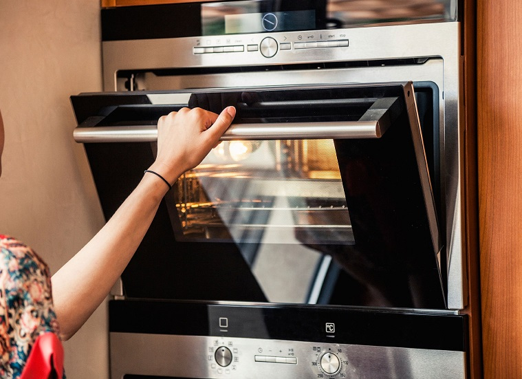
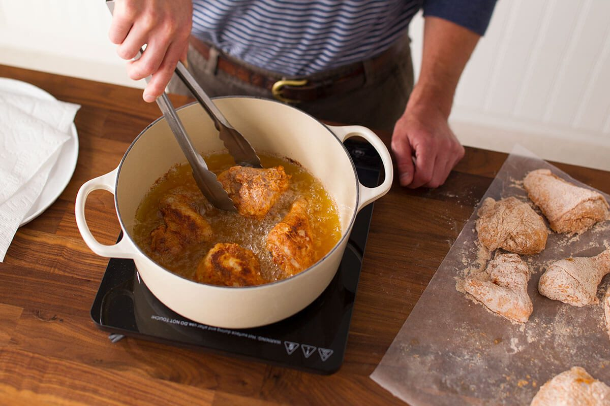
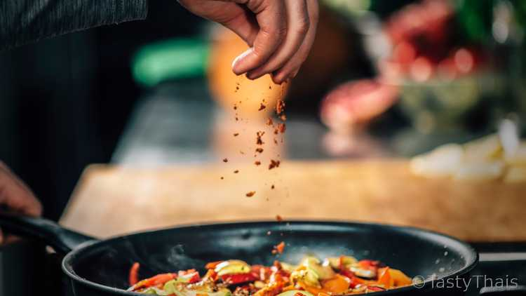
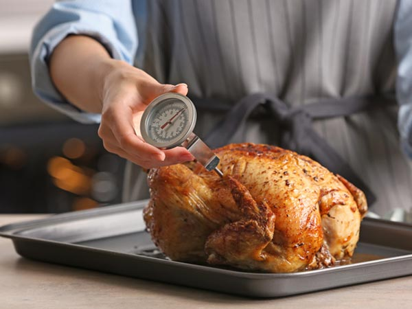

Common Mistakes |
||
Not taste testingHow will you know if your food will actually be good if you don't try it? This especially applies to when you aren't measuring your seasoning. Since you most likely won't have access to a stove, you will probably have to taste it before you cook, so don't taste test any meats that may cause salmonella like chicken and pork. |
||
Not fully reading the recipeI mess up on this one a lot myself. Sometimes, you may accidentally read a tablespoon as a teaspoon, or 1 cup as 1/2 a cup! It's important to make sure you get the proper measurements or your recipe will not work out. It's okay to "eyeball it" but that skill takes a while to get used to. |
 | |
Checking the ovenIn most recipes, they will give you a precise temperature to set your oven, but what they don't tell you is that everyone's oven is different. Some ovens burn hotter than others. In my case, my oven is very hot so I have to put food in for less time than what the recipe says. This will take some time to get used to. if you don't have access to an oven, this may apply to the microwave as well. |
 | |
fearDon't be afraid of the frying pans and instapots! with pans, expect to deal with a lot of oil flying at you. It may sting for a moment, but if you stay away from the pan, your food may burn because you won't be there to stir it. Instapots are a fairly new appliance, but don't let the buttons scare you. If you are confused, look for helpful youtube videos or read the instruction manual. |
 | |
Too little/too much seasoning.Sometimes, people like a little extra flavor, but referring to the taste testing rule, remember to taste how much you're putting in. If you put too much of one seasoning, you may need to add more of another to balance it out which may cause extra issues. If you underseason, your food will be bland. Try to find the middleground for those! |
 | |
Not using a meat thermometer.Sometimes, a recipe will say you are finished when your meat reaches a certain internal temperature. To know whether your meat is ready in those cases, you will need a meat thermometer. Your food may look cooked on the outside, but it could be raw on the inside! |
 | |
| back to the top | ||